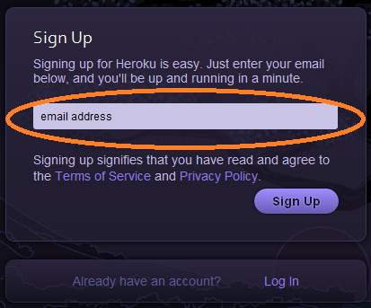
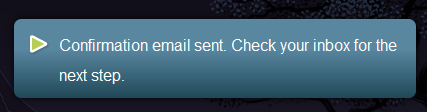
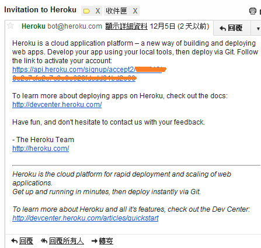
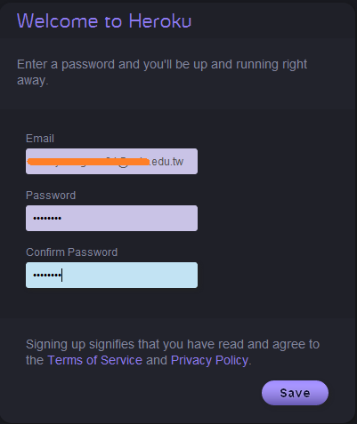
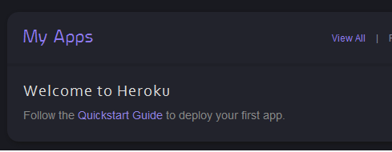
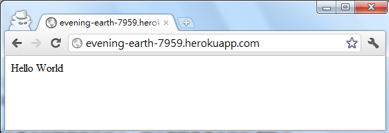
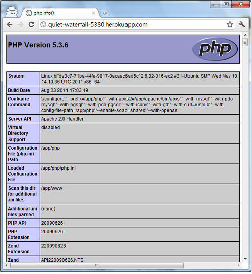
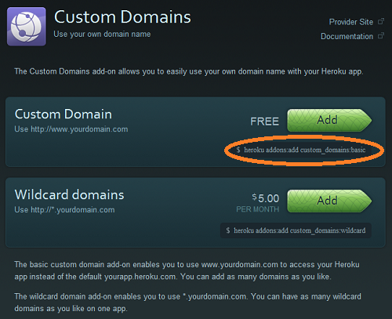
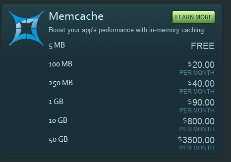

也紀念我們永遠的朋友 李士傑先生（Shih-Chieh Ilya Li）。
開始支援 PHP 的 PaaS 老品牌－Heroku
01. 前言
隨著雲端服務的興起，許多 PaaS 平台 (Platform as a service) 相繼問世，PHP 最近也出現了一些選擇，最早公開的應該是 PHPFog 以及在歐洲的 cloudControl；再來是從 Ruby 起家，與 Facebook 合作後公告提供 PHP 的 Heroku，以及 Zend 尚未推出正式版的 PHPCloud。
由於筆者最嫻熟 PHP，而且在痞客邦擔任技術研發部產品組組長，所以想接觸 PHP 相關的 PaaS，於公一來是希望能上傳痞客邦的一些小功能，減少痞客邦的維運成本，二來痞客邦已有公開的 API，可以開放外部功能的 open source，讓更多人了解痞客邦的 API；於私則是平常心血來潮寫些小東西，總算有個不需要花錢的地方可以嘗試了，於是先開始著手研究 Heroku。
Heroku 最早公布支援 PHP 的消息，可追溯至 9 月 15 日發表的公告 ，但這份公告只提到如何透過 Facebook Developer 頁面建立 PHP App，並聲明 PHP app 只能透過 Facebook Developer 建立。然而 xdite 的部落格卻指出實際上另有辦法，可不透過 Facebook Developer 的途徑來建立。關於這點目前 Heroku 的官方文件並沒有任何說明，算是密技吧。
02. 申請 Heroku 的步驟
接下來介紹如何建立簡單的 App。在進行以下步驟之前，要先俱備簡單的 git 和工作站使用的簡易基礎。關於 git 可參考 Tsung's Blog 上的教學。
I. 註冊帳號
首先至 https://api.heroku.com/signup 註冊一個帳號。
▲ 圖1：Heroku 的註冊頁面
接下來會顯示認證信已經寄出，準備去收信吧。
▲ 圖2：認證信寄出的通知頁面
II. 於註冊的電子信箱中收取註冊認證信
收到認證信後，點擊裡面的確認連結。
▲ 圖3：認證信
點擊認證信提供的連結後，會進入 Heroku 輸入密碼的頁面，請填入您欲註冊的密碼兩次。
▲ 圖4：密碼頁面
隨後會轉到 My Apps 頁面，表示註冊成功了！
▲ 圖5：My Apps 頁面
03. 建立第一個 App
再來需要在工作站上安裝 gem，只要主機有安裝過 Ruby 應該都可以使用這個指令，接著只需要輸入 sudo gem install heroku，就可以安裝好 Heroku 管理工具。
請於命令列模式下輸入下列指令：
> sudo gem install heroku
Successfully installed heroku-2.15.1
1 gem installed
Installing ri documentation for heroku-2.15.1...
Installing RDoc documentation for heroku-2.15.1...
然後可以用 heroku keys:add 上傳您的 ssh public key。
> heroku keys:add
Enter your Heroku credentials.
Email: ************************
Password: ****
Found existing public key: /home/users/srwang/.ssh/id_rsa.pub
Uploading ssh public key /home/users/srwang/.ssh/id_rsa.pub
產生 public key 的方式可以參考 Tsung's Blog 寫的 ssh keygen 免輸入密碼。
至此，基本的設定就完成了，接下來就是產生新的 App。只要按照以下步驟就可以產生一個 Hello World 頁面！
> heroku create --stack cedar # 建立 cedar stack 的 app ，只有 cedar stack 有支援 PHP
Creating evening-earth-7959... done, stack is cedar
https://evening-earth-7959.herokuapp.com/ |
這個 E-mail 地址已經被防止灌水惡意程式保護，您需要啟用 Java Script 才能觀看
:evening-earth-7959.git
上述指令的畫面中，最後顯示的名稱是隨機產生的，這個就是 App 的代號。按照該 App 代號進行以下操作，即可建立一個簡單的頁面。
> git clone
這個 E-mail 地址已經被防止灌水惡意程式保護，您需要啟用 Java Script 才能觀看
:evening-earth-7959.git # 將剛剛建立的 App clone 下來
Cloning into evening-earth-7959...
warning: You appear to have cloned an empty repository
> cd evening-earth-7959 # 進入你產生的 App
> echo ' index.php # 產生 Hello World 的 index.php
> git add index.php # 加進 git 的追蹤列表中
> git commit index.php -m 'add Hello World index.php' # commit 進去
[master (root-commit) 1d41b07] add Hello World index.php
1 files changed, 1 insertions(+), 0 deletions(-)
create mode 100644 index.php
> git push origin master # 推上線，只有第一次需要用 git push origin master ，之後用 git push 就好了
Counting objects: 3, done.
Writing objects: 100% (3/3), 250bytes, done.
Total 3 (delta 0), reused 0(delta 0)
-----> Heroku receiving push
-----> PHP app detected
-----> Bundling Apache v2.2.19
-----> Bundling PHP v5.3.6
-----> Discovering process types
Procfile declares types -> (none)
Default types for PHP -> web
-----> Compiled slug size in 21.5MB
-----> Launching... done, v3
https://evening-earth-7959.herokuapp.com deployed to Heroku
To
這個 E-mail 地址已經被防止灌水惡意程式保護，您需要啟用 Java Script 才能觀看
:evening-earth-7959.git
* [new branch] master -> master
最後，使用瀏覽器開啟 App 代號的網址，即可以看到本範例的簡易成品。
▲ 圖6：瀏覽器的畫面
04. 將已存在之網頁上傳至 Heroku
如果有已存在的 git repository，可以直接上傳至 Heroku，方法如下：
exists_repo > cat index.php # 這個 repository 已經存在一個 index.php
heroku create --stack cedar # 在這個已存在的 repository 建一個 Heroku app
Creating quiet-waterfall-5380... done, stack is cedar
https://quiet-waterfall-5380.herokuapp.com/ |
這個 E-mail 地址已經被防止灌水惡意程式保護，您需要啟用 Java Script 才能觀看
:quiet-waterfall-5380.git
Git remote heroku added
# 你可能會發現多了一行 Git remote heroku added，表示 Heroku 已經將你這個已經存在的 repository 跟 Heroku 連結起來了
exists_repo >git push heroku master # 將現在的 repository 推到 Heroku
Counting objects: 3, done.
Writing objects: 100% (3/3), 250bytes, done.
Total 3 (delta 0), reused 0(delta 0)
-----> Heroku receiving push
-----> PHP app detected
-----> Bundling Apache v2.2.19
-----> Bundling PHP v5.3.6
-----> Discovering process types
Procfile declares types -> (none)
Default types for PHP -> web
-----> Compiled slug size in 21.5MB
-----> Launching... done, v3
https://quiet-waterfall-5380.herokuapp.com deployed to Heroku
To
這個 E-mail 地址已經被防止灌水惡意程式保護，您需要啟用 Java Script 才能觀看
:quiet-waterfall-5380.git
* [new branch] master -> master
接下來打開瀏覽器就可以看到你成功上傳的 App 了。
▲ 圖7：heroku phpinfo 的顯示結果
從 phpinfo 的畫面中，我們可以看到 cedar stack 裡面的 PHP，已經裝好 curl、dom、fileinfo、gd、iconv、json、libxml、mysql、openssl、pgsql、sqlite 等 extension。其實有點少，像 memcache、imagick、zlib、gettext 之類的就無法使用了。
05. Heroku 的 Add-on
再來介紹 Heroku 強大的 Add-on 功能，只要到 https://addons.heroku.com/ 就有琳瑯滿目的 addons 可供使用。這邊介紹幾個常用的 addons。
I. 第一個是 Custom domains
▲ 圖8：heroku custom domain addon 介紹
這個 addons 可以讓你的 heroku app 有自己的專屬網址，而且是免費的！如果要用 wildcard domains，也就是讓 *.yourdomain 都會到這個 app（就像 PIXNET 會讓 [username].pixnet.net 都連到使用者前台一樣），就需要每個月 5 美金的費用，其實也不算太貴，來點選 LEARN MORE 看看怎麼用吧。
▲ 圖9：custom domain learn more
從框起來的地方可以看到，只要下 heroku addons:add custom_domain basic 這個指令，就可以免費幫你的 app 增加 custom_domain 的功能了!
> heroku addons:add custom_domains:basic # 增加 custom_domains addons
-----> Adding custom_domains:basic to quiet-waterfall-5380... done, v5 (free)
> heroku domains:add testapp.ronny.tw # 幫這個 App 增加 testapp.ronny.tw 的 domain
Added testapp.ronny.tw as a custom domain name for quiet-waterfall-5380
>
接下來，只要將你指定的 domain CNAME 到 [quiet-waterfall-5380.herokuapp.com]，之後就可以用 https://testapp.ronny.tw/ 看到這個 App 了，這比 https://quiet-waterfall-5380.herokuapp.com/ 這樣的名字好看多了吧！
II. 接著介紹 Heroku 提供的 memcache addons
▲ 圖10：memcache addons
點進 LEARN MORE，可以看到增加這個 addons 的指令是 heroku addons:add memcache:5mb，既然免費就放膽得打下去吧。
> heroku addons:add memcache:5mb
-----> Adding memcache:5mb to quiet-waterfall-5380... done, v6 (free)
>
# 稍等一分鐘左右
> heroku config
MEMCACHE_PASSWORD => *********
MEMCACHE_SERVERS => mc6.ec2.northscale.net
MEMCACHE_USERNAME => app******%40heroku.com
你可以看到你的 Heroku memcache 相關設定。Heroku 使用的是 memcache 加上 sasl 認證功能，這在 PHP 內建的 memcache 是不支援的，就算是 pecl-memcached 支援的版本也還未推出正式版。我自己有寫一個 PHPMemcacheSASL 放在 github，如此一來只要用下面的程式就可以做出一個用 Memcache 的 counter app。
1 addServer(getenv('MEMCACHE_SERVERS'), '11211');
7 $m->setSaslAuthData(getenv('MEMCACHE_USERNAME'),getenv('MEMCACHE_PASSWORD'));
8 $count = $m->get('count');
9 echo $count;
10 $m->increment('count');
您可以在 PHP 中直接利用 getenv 取得 Heroku config 裡的資訊。
有了 memcache，您的 App 就可以運用一些 cache 加速，或將 session 放在這邊（可惜 Heroku 沒有裝 zlib extension，memcache 裡的東西不能壓縮，免費的 5MB 很快就用完了）。
III. Heroku 提供的 postgresql 資料庫
再來是 Heroku 提供的 postgresql。Heroku 提供的 shared db 免費版有 5MB，如果要升級的話費用為 20GB 每個月 15 美元。這邊先示範免費版。
> heroku addons:add shared-database:5mb
-----> Adding shared-database:5mb to quiet-waterfall-5380... done, v9 (free)
# 等個約一分鐘
> heroku config
DATABASE_URL => postgres://*username*:*password*@*hostname*/*dbname*
SHARED_DATABASE_URL => postgres://*username*:*password*@*hostname*/*dbname*
上面是 Heroku 提供的 postgresql 主機相關設定。關於 postgresql 的語法在這邊就不多談，它跟 MySQL 還是有些差別。在 PIXNET 我們已研發出自己的 ORM，可以用 mysql、pgsql、sqlite 或者 cassandra 為底層資料庫，而用法都不變。這套 ORM 之後可能會 open source 出來，到時候會另外介紹，並說明如何在 Heroku 上面使用。
再來介紹如何看 Heroku 的記錄。只要用 Heroku logs 這個指令，就可以看到每分鐘最多 500 行的記錄，包括 access log、PHP error_log、Heroku 相關操作記錄。您也可以持續運作 heroku logs --tail，它會顯示新記錄，藉此觀察目前上線情況是否有任何問題。這點對於 debug 或者確認線上是否有狀況是相當方便的。如果每分鐘 500 行無法滿足你的需求，就可以考慮到 https://addons.heroku.com/logging 花錢升級至更好的 logging。
IV. 其它 Add-on
最後為大家介紹一些可能很有用的 Addons：
- https://addons.heroku.com/cron：可以指定在固定間隔時間所執行的動作，分為 daily（免費）或者 hourly（收費為每個月 3 美元）
- https://addons.heroku.com/deployhooks：當有人部署程式到線上時，可以指定要透過 mail、RC、HTTP POST 或是其他方式通知，完全免費。
- https://addons.heroku.com/mailgun：可以讓你的 App 透過 mailgun 寄出信件，一天寄 300 封信以內都免費。
- https://addons.heroku.com/cloudmailin：讓你的 App 可以收信，一天收 200 封以內都免費。
Heroku 有很多免費的 App，可以盡情嘗試。
06. 更多 Heroku 的功能
利用 heroku help 查看可用的 Heroku 指令。
> heroku help
Usage: heroku COMMAND [--app APP] [command-specific-options]
Primary help topics, type "heroku help TOPIC" for more details:
auth # authentication (login, logout) apps # manage apps (create, destroy) ps # manage processes (dynos, workers) run # run one-off commands (console, rake) addons # manage addon resources config # manage app config vars releases # view release history of an app domains # manage custom domains logs # display logs for an app sharing # manage collaborators on an app
Additional topics:
account # manage heroku account options
db # manage the database for an app
drains # display syslog drains for an app
help # list commands and display help
keys # manage authentication keys
maintenance # toggle maintenance mode
pg # manage heroku postgresql databases
pgbackups # manage backups of heroku postgresql databases
plugins # manage plugins to the heroku gem
ssl # manage ssl certificates for an app
stack # manage the stack for an app
update # update the heroku client
version # display version
>
大家可以自行研究如何使用各項指令囉。
07. 結論
Heroku 算是 addons 功能很強大的 Paas 平台，有許多 addons 可供選擇來加強您所做的 App，多多嘗試的話，您可以更加了解現在流行的「雲端服務」。不過因為 Heroku 架設於美東的 Amazon Web Service 上，到台灣至少會延遲約 200 ms，因此如果您在上面設網站，台灣的使用者也將感受到您的網站略有延遲。但是如果拿來當作手機 App 背後的 API server，或者是 javascript、iframe 外掛的話，這 200 ms 的延遲就沒什麼感覺了，很適合用 Heroku 來實作。至於架設網站給台灣人用的話，還是選擇東京的 Amazon Web Service 或是 Linode，比較便宜而且速度更快。
另外，因為 Heroku 的 PHP 支援還不算是官方正式公開的功能，因此目前在文件以及功能方面仍不夠完整，例如前面提到 extension 數量稀少的問題，也不知道何時才會解決，如果短期之內對一些 extension 有需求，就要審慎考慮 Heroku 目前的情況。
分享一下我們用 PIXNET API 放在 Heroku 上面的 iframe 相簿外嵌幻燈片功能吧，日後 PIXNET 應該會上傳更多類似的小工具到 Heroku。
自由軟體鑄造場電子報 : 第 187 期 PaaS：程式語言開發在雲端「Programming in Paas」（上）
標籤: PaaS, Heroku, PHP, Ronny, 雲端, Platform as a service,
分類: 技術專欄
專欄總覽


E-Mail：contact@openfoundry.org Address：台北市南港區研究院路2段128號 中央研究院資訊科學研究所 . 隱私權條款. 使用條款